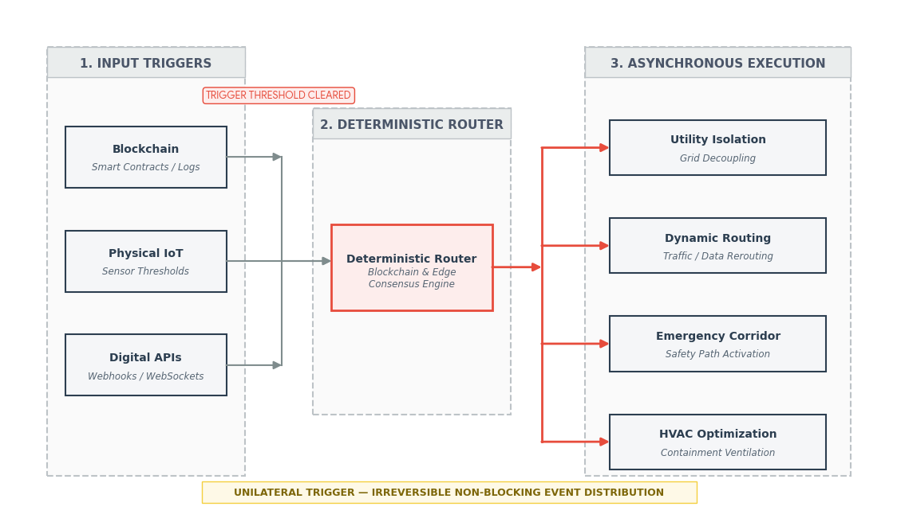
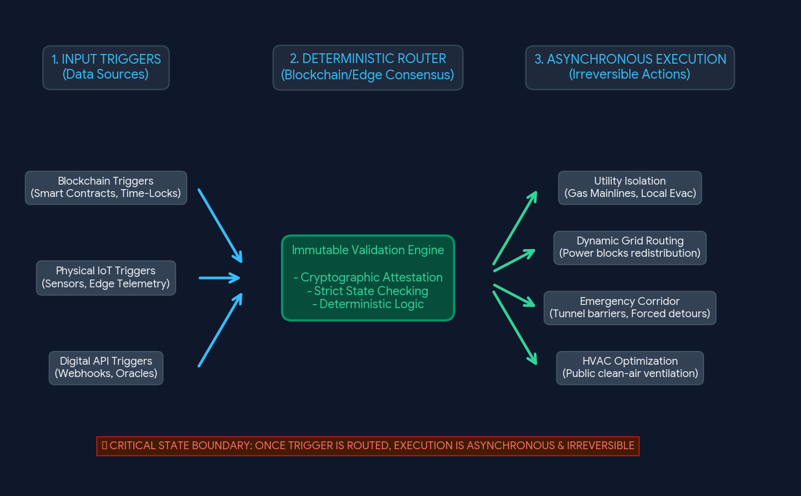

Conversation 766
Smart City Digital Triggers
Prompt 1 · You
fire and forget systems triggers and events smart city blockchain and other digital triggers
Response 1 · Google AI Mode
Fire-and-forget systems in smart cities execute automated, irreversible workflows once activated by a validated cryptographic or environmental trigger. By relying on deterministic infrastructure like blockchain, IoT gateways, and edge computing, these architectures eliminate the need for human monitoring, secondary confirmations, or ongoing manual intervention.
🌐 Architectural Overview: Triggers to Events
In a smart city ecosystem, a fire-and-forget workflow operates as a decoupled data pipeline. Triggers act as the input mechanisms, while events represent the deterministic outcomes.
[Digital / Physical Trigger] ──> [Deterministic Router (Blockchain/Edge)] ──> [Asynchronous Event Execution]
⚡ Technical Trigger Categories
- Blockchain and Smart Contract Triggers
- State Changes: Modifications within a ledger's shared state (e.g., a cryptographic token passing a wallet threshold) invoke an on-chain event emitter.
- Time-Lock / Epoch Triggers: Smart contracts executing autonomously when the blockchain network reaches a specific block height or a Unix timestamp condition (
block.timestamp). - Multi-Signature Handshakes: Automatic execution of a public service workflow once a threshold of valid cryptographic keys (M of N) sign a payload.
- Physical and IoT Edge Triggers
- Telemetry Thresholds: Edge sensors checking real-time environmental bounds—such as acoustic micro-sensors registering decibel spikes indicative of localized structural failure.
- Spatial/Geofencing Telemetry: GPS coordinates or ultra-wideband (UWB) proximity logs crossing a pre-defined polygon vertex.
- Biometric & CV Signals: Computer vision loops executing a trigger upon registering discrete object bounding boxes (e.g., classifying a vehicle blocking an emergency transit lane).
- Digital and API Triggers
- Webhooks & Event Streams: Real-time HTTP POST requests or Apache Kafka log appends broadcasted when third-party microservices log data anomalies.
- Oracle Networks: Decentralized protocols (e.g., Chainlink) scraping real-world data (such as regional weather metrics or global logistics indexes) and feeding verified payloads to deterministic processing layers.
📊 Deterministic Routing & Event Execution Flow
The core principle of fire-and-forget is that once a trigger is verified, the execution engine assumes total control and runs asynchronously until completion. If an infrastructure node fails mid-execution, state synchronization protocols ensure the workflow completes without dropping data packets.
The table below outlines how these multi-layered triggers translate to autonomous, fire-and-forget urban actions.
| Trigger Origin | Core Mechanism | Urban Event Output | Resiliency Layer |
|---|---|---|---|
| Decentralized Oracles | Regional seismic data ingestion crosses critical Richter scale limits. | Autonomous Utility Isolation: Natural gas mainlines instantly close; structural alert beacons broadcast localized evacuations. | Blockchain state-logs ensure fail-proof execution across all grids. |
| Smart Contract (ERC-20/721) | Micro-transaction automated payment clears for utility or logistics access. | Dynamic Grid Routing: Smart grid reroutes power supply blocks to industrial manufacturing zones. | Immutable ledger transaction receipts serve as programmatic access keys. |
| Edge Computer Vision | High-definition street cameras detect stationary vehicular debris inside an active transit tunnel. | Emergency Corridor Activation: Tunnel lane barriers dynamically lower; traffic management networks force immediate detours. | Edge compute loops bypass cloud downtime risks for immediate localized routing. |
| Environmental IoT | Air quality particulate index (PM2.5) sustains unsafe levels over 120 minutes. | Micro-Climate HVAC Optimization: Public transit ventilation nodes alter airflow configurations; public clean-air zones open. | Cryptographically signed sensor outputs prevent false-positive system overrides. |

Download
🛡️ Critical Design Challenges
- The Oracle Problem: Blockchains cannot natively access off-chain data. Fire-and-forget systems depend entirely on the integrity of the data providers. If a sensor reports corrupted data, the smart contract will still execute its irreversible event.
- Cascading Cascades: Because these systems are unmonitored after activation, an unintended trigger can cause a chain reaction across interconnected urban services (e.g., an accidental transit shutdown locking out power distribution systems).
- Cryptographic Attestation: All data inputs from physical devices must use Hardware Security Modules (HSMs) to sign data at the chip level. This verifies that the trigger came from an authenticated, unaltered device before entering the processing pipeline.
Would you like to explore specific smart city platforms utilizing this architecture, or drill down into the cryptographic security protocols used to protect hardware sensors from spoofing triggers?
Prompt 2 · You
i am a creative technologist Tom Klootwijk search for me online
Response 2 · Google AI Mode
Hello Tom! Based on a search of public online profiles, here is the digital footprint matching your background as a Creative Technologist:
🛠️ Professional Profile & Background
- Core Role: You are a Creative Technologist based in the Amsterdam Area, Netherlands.
- Experience: You were formerly self-employed at Dawnwood Interactive, where you specialized in driving value by building experiences across a diverse range of technologies. You describe yourself as an "action-oriented realist".
- Education: You studied at the Amsterdam University of Applied Sciences (Hogeschool van Amsterdam).
 LinkedIn +1
LinkedIn +1
🚀 Key Projects & Technical Highlights
- Extended Reality & Interactive Tools: Your work heavily interfaces with hardware, robotics, and interactive environments.
- Cognizant Presentation Coach App: You built one of the very first applications designed to transcribe live audio directly from the Oculus Quest in real-time.
- How it worked: The application tracked advanced user metrics during presentations—including tone of voice, usage of filler words, and audience eye contact.
- Deployment: It was integrated into Cognizant's internal Academy to coach client-facing staff on public speaking and presentation skills.
 Instagram
Instagram
🌐 Where You Are Found Online
- Your primary professional page is the Tom Klootwijk LinkedIn Profile.
- You share snapshots and reflections of past builds on your Instagram profile @tomklootwijk. LinkedIn
Would you like to update or add specific recent AI workflows, edge IoT builds, or smart-city projects to this overview? Let me know what you are currently working on!
Source links preserved from this response
- LinkedIn
https://www.linkedin.com/pub/dir/Tom/Klootwijk - @tomklootwijk
https://www.instagram.com/tomklootwijk/ - LinkedIn
https://nl.linkedin.com/in/tom-klootwijk-8747848
Prompt 3 · You
now the first prompt
Response 3 · Google AI Mode


Here are top web results for exploring this topic:
StylerGPT·https://stylergpt.com
Prompt History for ChatGPT: Recall Prompts - StylerGPT
Pick up useful wording without losing your place · Recall your latest prompt first. You are drafting a product launch update and want to revisit how you asked for release priorities. Click the message
Quora·https://www.quora.com
How does ChatGPT remember the beginning of the conversation if it ...
I gave the prompt “Summarize the chat so far”. The reply was simply summarizing the last topics in order, omitting the first few questions. I then asked, “Didn't we discuss lizards at one point?”, to
Reddit·https://www.reddit.com
Wait, ChatGPT has to reread the entire chat history every single time?
The way I put it to my students is that the entire life of the AI is in the inference in the conversation. The first moment it "experiences" is the system prompt, then the entire conversation is re-ev
Embrace The Red·https://embracethered.com
How ChatGPT Remembers You: A Deep Dive into Its Memory and ...
Reference Saved Memories: This is the bio tool that we described and hacked in the past. ChatGPT contains these memories, plus a timestamp, in the Model Set Context section of the system prompt. Users

OpenAI Developer Community·https://community.openai.com
Best prompt engineering to simulate the remembrance of the ...
Chronos: that it could chat continuously and remember the key phrases of previous conversations? The OpenAI API models do not have session management. The standard way to attempt to build session mana

Facebook·https://www.facebook.com
How does ChatGPT use previous prompt information in ... - Facebook
Seems like it would be trivial to test. Log in as two different accounts; Ask a question from one account; Copy the question and response as text and paste them into a ChatGPT window from another acco

YouTube·https://www.youtube.com
How To Make ChatGPT Remember Previous Conversations
This step-by-step guide will show you how to enable and manage ChatGPT Memory so you can enjoy more personalized conversations without repeating the same information every time! What You'll Learn in T

arXiv.org·https://arxiv.org
Conversational Response Retrieval Using LLMs as Answer ... - arXiv
We first prompt the LLM to generate an answer for a given dialogue, followed by various retrieval strategies to ground the generated answer in the passage collection. These strategies include: (i) usi
Source links preserved from this response
- Prompt History for ChatGPT: Recall Prompts - StylerGPT
https://stylergpt.com/features/chatgpt-prompt-history - How does ChatGPT remember the beginning of the conversation if it ...
https://www.quora.com/How-does-ChatGPT-remember-the-beginning-of-the-conversation-if-it-does-not-have-a-state-and-input-size-is-limited - Wait, ChatGPT has to reread the entire chat history every single time?
https://www.reddit.com/r/ChatGPT/comments/1kw36jt/wait_chatgpt_has_to_reread_the_entire_chat/ - How ChatGPT Remembers You: A Deep Dive into Its Memory and ...
https://embracethered.com/blog/posts/2025/chatgpt-how-does-chat-history-memory-preferences-work/ - Best prompt engineering to simulate the remembrance of the ...
https://community.openai.com/t/best-prompt-engineering-to-simulate-the-remembrance-of-the-conversation/59515 - How does ChatGPT use previous prompt information in ... - Facebook
https://www.facebook.com/groups/DeepNetGroup/posts/1893322251060648/ - How To Make ChatGPT Remember Previous Conversations
https://www.youtube.com/watch?v=9LhpIQBrH3g - Conversational Response Retrieval Using LLMs as Answer ... - arXiv
https://arxiv.org/html/2403.19302v1 - AI Conversation History: 4 Strategies with .NET samples - bool.dev
https://bool.dev/blog/detail/ai-conversation-history-strategies - Using Chat Logs To Discover Real Prompts - Geeky Tech
https://www.geekytech.co.uk/using-chat-logs-to-discover-real-prompts/
Prompt 4 · You
fire and forget systems triggers and events smart city blockchain and other digital triggers
Response 4 · Google AI Mode
Fire-and-forget systems in smart cities execute automated, irreversible workflows once activated by a validated cryptographic or environmental trigger. By relying on deterministic infrastructure like blockchain, IoT gateways, and edge computing, these architectures eliminate the need for human monitoring, secondary confirmations, or ongoing manual intervention.
🌐 Architectural Overview: Triggers to Events
In a smart city ecosystem, a fire-and-forget workflow operates as a decoupled data pipeline. Triggers act as the input mechanisms, while events represent the deterministic outcomes.
[Digital / Physical Trigger] ──> [Deterministic Router (Blockchain/Edge)] ──> [Asynchronous Event Execution]
⚡ Technical Trigger Categories
- Blockchain and Smart Contract Triggers
- State Changes: Modifications within a ledger's shared state (e.g., a cryptographic token passing a wallet threshold) invoke an on-chain event emitter.
- Time-Lock / Epoch Triggers: Smart contracts executing autonomously when the blockchain network reaches a specific block height or a Unix timestamp condition (
block.timestamp). - Multi-Signature Handshakes: Automatic execution of a public service workflow once a threshold of valid cryptographic keys (M of N) sign a payload.
- Physical and IoT Edge Triggers
- Telemetry Thresholds: Edge sensors checking real-time environmental bounds—such as acoustic micro-sensors registering decibel spikes indicative of localized structural failure.
- Spatial/Geofencing Telemetry: GPS coordinates or ultra-wideband (UWB) proximity logs crossing a pre-defined polygon vertex.
- Biometric & CV Signals: Computer vision loops executing a trigger upon registering discrete object bounding boxes (e.g., classifying a vehicle blocking an emergency transit lane).
- Digital and API Triggers
- Webhooks & Event Streams: Real-time HTTP POST requests or Apache Kafka log appends broadcasted when third-party microservices log data anomalies.
- Oracle Networks: Decentralized protocols (e.g., Chainlink) scraping real-world data (such as regional weather metrics or global logistics indexes) and feeding verified payloads to deterministic processing layers.
📊 Deterministic Routing & Event Execution Flow
The core principle of fire-and-forget is that once a trigger is verified, the execution engine assumes total control and runs asynchronously until completion. If an infrastructure node fails mid-execution, state synchronization protocols ensure the workflow completes without dropping data packets.
The table below outlines how these multi-layered triggers translate to autonomous, fire-and-forget urban actions.
| Trigger Origin | Core Mechanism | Urban Event Output | Resiliency Layer |
|---|---|---|---|
| Decentralized Oracles | Regional seismic data ingestion crosses critical Richter scale limits. | Autonomous Utility Isolation: Natural gas mainlines instantly close; structural alert beacons broadcast localized evacuations. | Blockchain state-logs ensure fail-proof execution across all grids. |
| Smart Contract (ERC-20/721) | Micro-transaction automated payment clears for utility or logistics access. | Dynamic Grid Routing: Smart grid reroutes power supply blocks to industrial manufacturing zones. | Immutable ledger transaction receipts serve as programmatic access keys. |
| Edge Computer Vision | High-definition street cameras detect stationary vehicular debris inside an active transit tunnel. | Emergency Corridor Activation: Tunnel lane barriers dynamically lower; traffic management networks force immediate detours. | Edge compute loops bypass cloud downtime risks for immediate localized routing. |
| Environmental IoT | Air quality particulate index (PM2.5) sustains unsafe levels over 120 minutes. | Micro-Climate HVAC Optimization: Public transit ventilation nodes alter airflow configurations; public clean-air zones open. | Cryptographically signed sensor outputs prevent false-positive system overrides. |

Download
🛡️ Critical Design Challenges
- The Oracle Problem: Blockchains cannot natively access off-chain data. Fire-and-forget systems depend entirely on the integrity of the data providers. If a sensor reports corrupted data, the smart contract will still execute its irreversible event.
- Cascading Cascades: Because these systems are unmonitored after activation, an unintended trigger can cause a chain reaction across interconnected urban services (e.g., an accidental transit shutdown locking out power distribution systems).
- Cryptographic Attestation: All data inputs from physical devices must use Hardware Security Modules (HSMs) to sign data at the chip level. This verifies that the trigger came from an authenticated, unaltered device before entering the processing pipeline.
Would you like to explore specific smart city platforms utilizing this architecture, or drill down into the cryptographic security protocols used to protect hardware sensors from spoofing triggers?